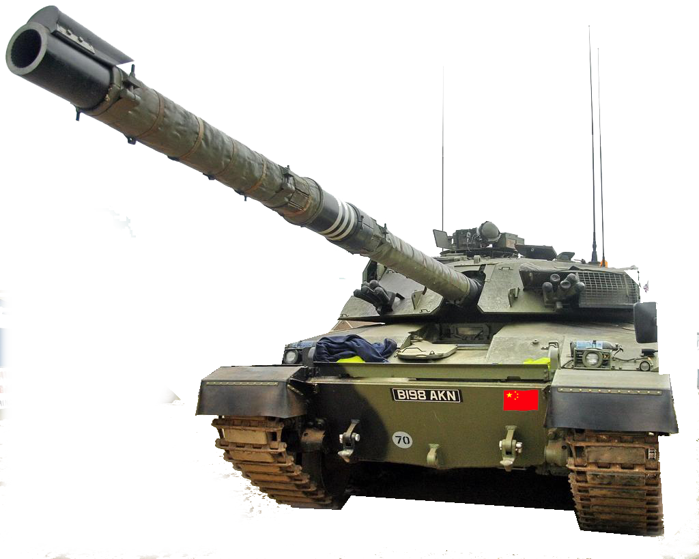

例261
拖动页面上的元素
小小验证

例263
使用canvas画个矩形
例265
SVG标量图形绘制
例266
获取用户当前的地理坐标
location对象，号称BOM对象里最6的那个
。
| 属性 | 效果 |
| location.hash |
返回URL中的hash值，无则返回空字符串 |
|
|
| location.host |
返回服务器名称和端口号 |
|
|
| location.hostname |
返回不带端口号的服务器名称(醉了，你丫直接搞基毛) |
|
|
| location.href |
返回完整url,等同于.toString() |
|
|
| location.pathname |
返回URL中目录和文件名 |
|
|
| location.port |
返回URL中端口号 |
|
|
| location.protocol |
返回页面使用的协议 |
|
|
| location.search |
返回URL中的查询字符串 |
|
|
例267
根据地理位置信息定位城市
例268
例269
例270
注意了啊！这里两个估计是用的同一个内存，他们会共用变量名